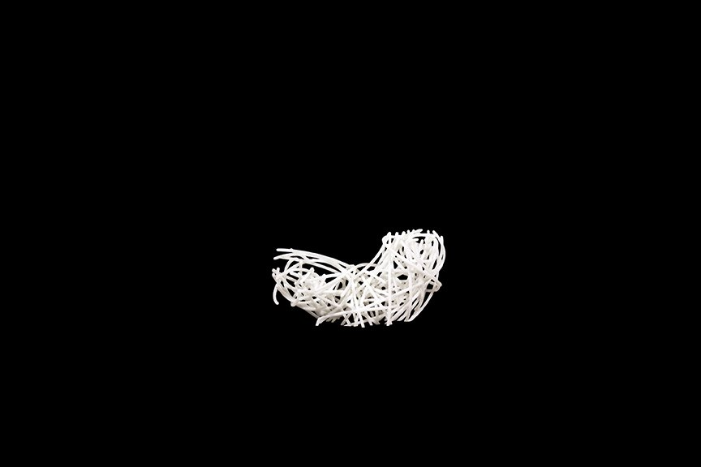
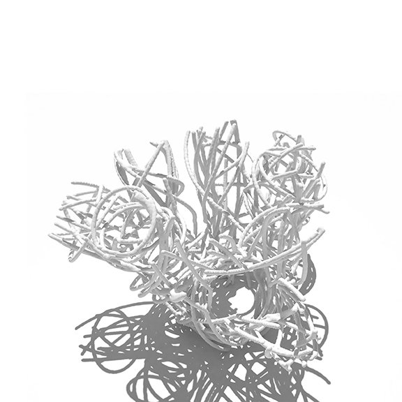
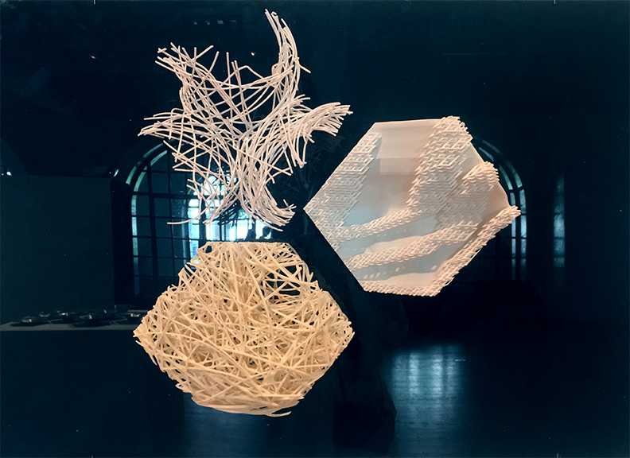

Bio-[In]formatic Modeling -- Danelle Briscoe, Chandrajit Bajaj Spring 2016
Weaver bird nests consist of many small nodes clustered together to form a single mass, and multiple openings access the central void. The birds construct the overall shape by weaving together countless twigs, grass and feathers until a very solid structure emerges.
L-systems and flocking in Grasshopper produce a digital method to build a similar structure. First, modeling the central void as a solid objects gives the flocking particles a surface to slide across. These particles generate a collection of random curves that enclose the void. Then the Cocoon plug-in gives thickness to the resulting curves as a single mesh, seamlessly leading to an .stl file for 3D printing. A portion of the model printed with strands thinner than .06 inches in diameter, tested its resemblance to a nest. Varying the density of the flocking particles changes the structural integrity of the model since its strength comes from strand intersections. Ideally, the flock could be increased until it reaches the density of an actual weaver bird nest, allowing for the potential to create artificial nests. The class selected this project as one of three to be included in the UTSoA Fall 2016 exhibit on the Living Wall under the heading “collaboration + fabrication”.
